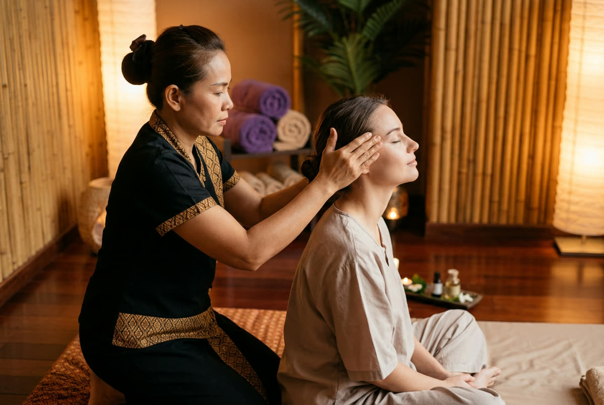
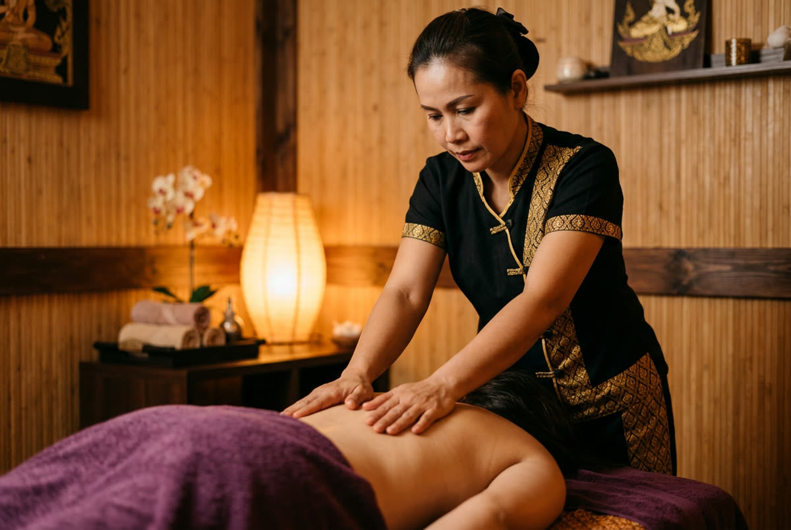
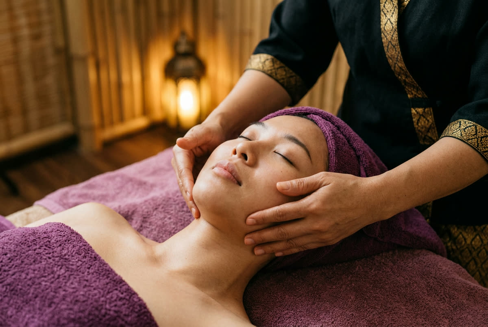
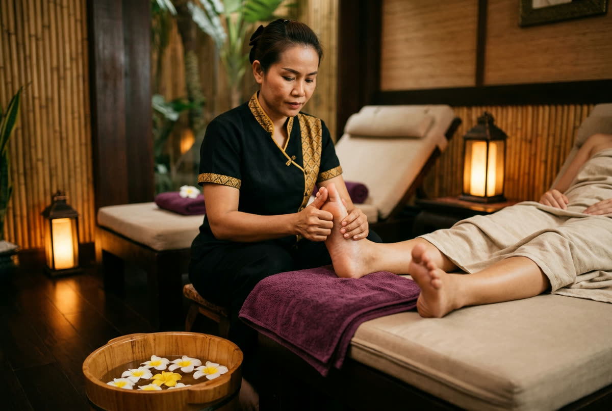
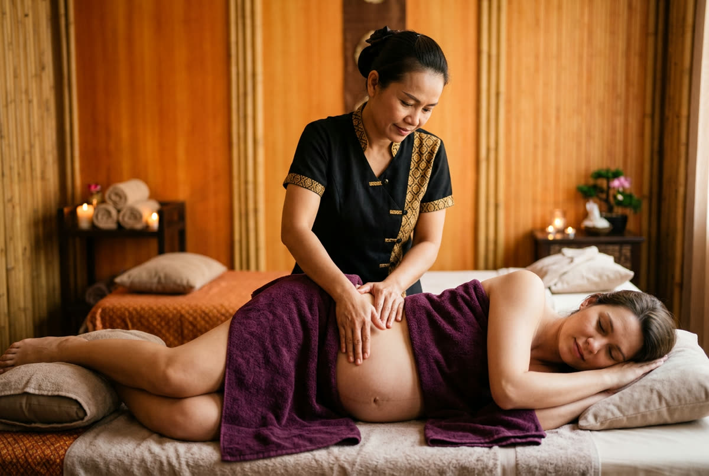
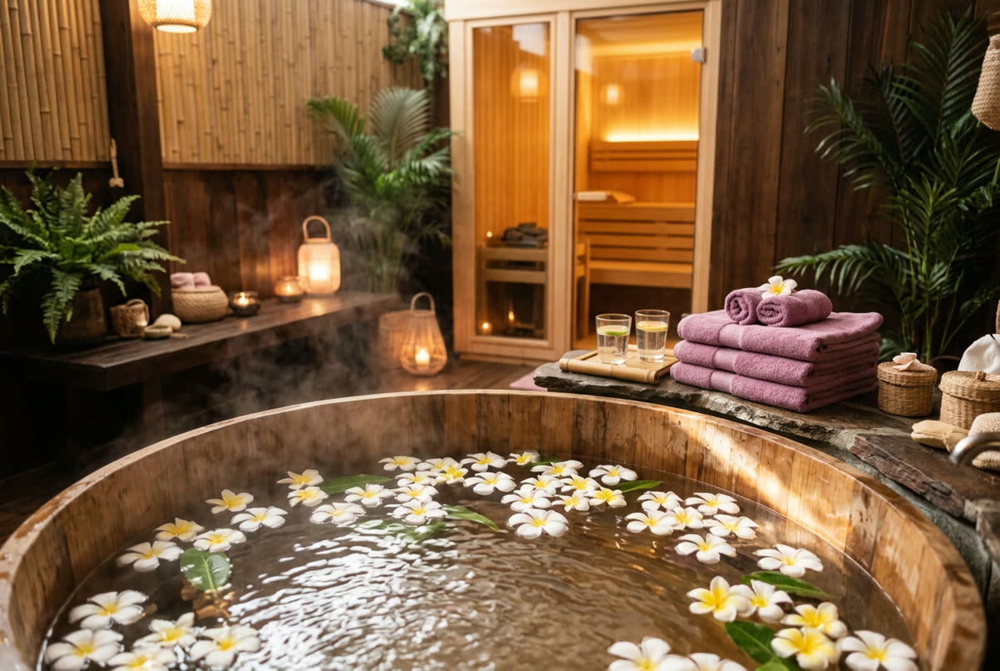
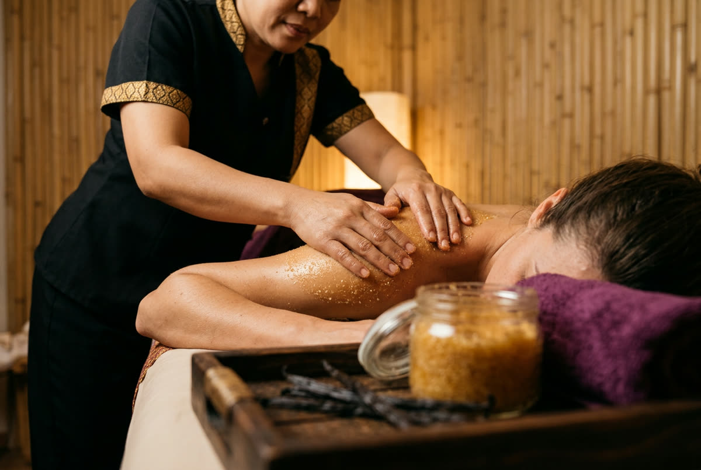

Služby a ceník


Thajské masáže v Mostě – masáže a ceník
Kompletní nabídka salonu Thai Most: 19 masáží a rituálů v rukou rodilých Thajek a Filipínek s certifikací školy Wat Pho. Ke všem procedurám karafa vody zdarma, každá šestá masáž s věrnostní kartičkou zdarma. Objednat se můžete online nebo na +420 778 429 329.
Masáže
Tradiční thajská masážKombinace akupresury, práce na energetických drahách a protažení v jógových pozicích. Bez oleje, na matraci na podlaze, klient zůstává oblečen.60 min 800 Kč · 90 min 1 100 Kč · 120 min 1 600 Kč

Masáž hlavy a šíjeMasáž zaměřená na krční páteř, hlavu a ramena. Probíhá nasucho, stlačováním akupresurních bodů uvolňuje bloky v těchto partiích.30 min 450 Kč · 60 min 800 Kč

Masáž zad a krkuSpeciální techniky zaměřené na šíji, ramena, bederní a křížovou oblast. Pravidelné opakování může zmírnit bolesti zad ze sedavého zaměstnání.30 min 450 Kč · 60 min 800 Kč
Thajská olejová masážVelmi relaxační forma thajské masáže – jemná až střední technika spojená s účinky aromatických olejů z thajských bylin.60 min 800 Kč · 90 min 1 100 Kč
Aroma masážOlejová masáž celého těla s vonnými oleji dle výběru, doplněná inhalací esencí. Na výběr limetka + bambus nebo citronová tráva + pomeranč.60 min 850 Kč
Dětská masážOlejová masáž celého těla pro děti od 2 do 10 let, přizpůsobená jejich věku a fyzickému stavu.40 min 450 Kč

Lymfatická masáž obličeje a dekoltuVelmi jemné a pomalé hmaty na suchou pokožku bez olejů a krémů. Zbavuje podkoží přebytečné tekutiny a podporuje regeneraci pleti.30 min 450 Kč · 60 min 800 Kč
Poporodní masážSpojení tradiční thajské masáže a bylinné léčby s přikládáním bylinných váčků na problematické partie ženského těla po porodu.60 min 800 Kč
Masáž obličejeSpojení kosmetického ošetření pleti a akupresurní masáže – peeling, pleťová maska a regenerační krémy. Během masky i masáž krční páteře.60 min 900 Kč

Masáž nohouČást tradiční thajské masáže pro unavené a opuchlé nohy, kombinovaná s reflexologií. S thajským balzámem nebo nahřívanými bylinnými sáčky.60 min 800 Kč · 60 min s bylinnými sáčky 1 100 Kč
Bylinná masážPovzbuzující herbal massage – tradiční thajská masáž doplněná horkými bylinnými houbičkami pro hlubší uvolnění svalů.90 min 1 600 Kč · 120 min 1 880 Kč
Siam massageHorká bylinná masáž z tradiční thajské medicíny. Nahřáté bylinné váčky uvolňují svalovou bolest a změkčují pokožku.120 min 1 880 Kč
Ventosa masáž (baňkování)Tradiční filipínská masáž: olejová masáž celého těla, skleněné baňky vytvářející podtlak a ušní svíčky.90 min 1 250 Kč
Masáž obličeje lávovými kamenyTeplo a vibrace lávových kamenů pro regeneraci pleti, relaxaci a uvolnění. Vhodné pro všechny typy pokožky.30 min 580 Kč · 60 min 950 Kč
Ruční lymfatická masáž celého tělaLymfatická masáž celého těla prováděná ručně.60 min 800 Kč

Těhotenská masážJemná tlaková masáž v pohodlném oblečení pro budoucí maminky. Pomáhá při bolestech zad a hlavy, nespavosti, otocích i stresu.60 min 800 Kč
Wellness a rituály

Whirlpool a saunaPrivátní relaxace ve whirlpoolu a sauně. Karafa vody ke všem procedurám zdarma, šampaňské 150 Kč.Sauna + sprcha 400 Kč · 90 min whirlpool 1 100 Kč · 90 min whirlpool + sauna 1 150 Kč · 120 min párová (2 asistentky + šampaňské + whirlpool + sauna) 2 600 Kč
Fiji rituálKokosový krémový peeling, zábal s tělovým máslem, přikládání lávových kamenů a na závěr lehká olejová masáž.90 min 1 500 Kč

Cukrový vánek z rájeLuxusní peeling cukrovou třtinou z Fidži s tropickými oleji a kokosovým mlékem. Odstraní odumřelé buňky a hluboce hydratuje.90 min 1 500 Kč
Párová masážDvě masérky zároveň ve dvoulůžkové masérně, samostatně nebo jako balíček s whirlpoolem a saunou.více o párové masáži